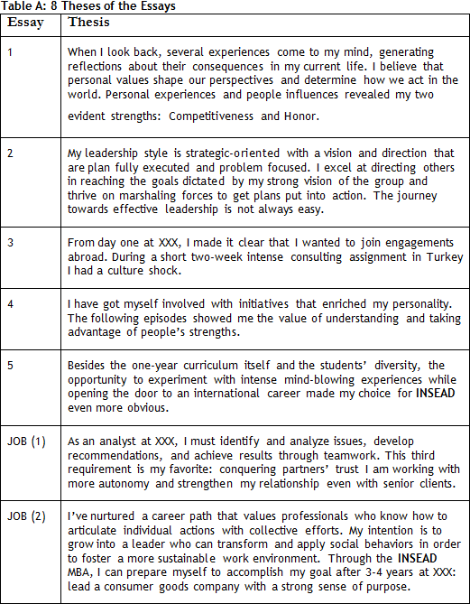

DISCLAIMER: Km 31 (Stanford)/ Km 32 (HBS) / Km 33 (Wharton) / Km 34 (MIT Sloan) / Km 35 (CBS) / Km 36 (Booth) / Km 37 (Kellogg) guidance in assembling your first/second/third/fourth/fifth/sixth/seventh essay packages.
The following dialogue helps you put together your eighth package, INSEAD (see).
Even if you’re not applying to Stanford/HBS/Wharton/Sloan/CBS/Booth/Kellogg carefully the comments made on how to assemble these three initial essay packages. Those dialogues will allow you to better enjoy the following one.
Before we discuss their essays, we should recall that in order to build your INSEAD package, you must have done the Big Synthesis Exercise and reflected upon the feedback of your 3 Wise Men.
Relax, Megaron. After our BSM (Big Synthesis Meeting) I obtained my friends’ feedback. I am ready to build the 00 version of INSEAD.
Relax, Megaron. After our BSM (Big Synthesis Meeting) I obtained my friends’ feedback. I am ready to build the 00 version of INSEAD.
Observe this year’s questions proposed by INSEAD (see).
Essay 1: Give a candid description of yourself (who are you as a person), stressing the personal characteristics you feel to be your strengths and weaknesses and the main factors which have influenced your personal development, giving examples when necessary. (approx. 500 words)
Essay 2: Describe the achievement of which you are most proud and explain why. In addition, describe a situation where you failed. How did these experiences impact your relationships with others? Comment on what you learned. (approx. 400 words)
Essay 3: Describe all types of extra-professional activities in which you have been or are still involved for a significant amount of time (clubs, sports, music, arts, politics, etc). How are you enriched by these activities? (approx. 300 words)
Optional Essay: Is there anything else that was not covered in your application that you would like to share with the Admissions Committee? (approx. 300 words)
Job Essay 1: Briefly summarise your current (or most recent) job, including the nature of work, major responsibilities, and where relevant, employees under your supervision, size of budget, clients/products and results achieved. (short answer, max. 350 words)
Job Essay 2: What would be your next step in terms of position if you were to remain in the same company? (short answer, max. 350 words)
Job Essay 3: Please give a full description of your career since graduating from university. Describe your career path with the rationale behind your choices. (short answer, max. 350 words)
Job Essay 4: Discuss your short and long term career aspirations with or without an MBA from INSEAD. (short answer, max. 350 words)
Optional Job Essay: If you are currently not working or if you plan to leave your current employer more than 2 months before the programme starts, please explain your activities and occupations between leaving your job and the start of the programme.
Essay 2: Describe the achievement of which you are most proud and explain why. In addition, describe a situation where you failed. How did these experiences impact your relationships with others? Comment on what you learned. (approx. 400 words)
Essay 3: Describe all types of extra-professional activities in which you have been or are still involved for a significant amount of time (clubs, sports, music, arts, politics, etc). How are you enriched by these activities? (approx. 300 words)
Optional Essay: Is there anything else that was not covered in your application that you would like to share with the Admissions Committee? (approx. 300 words)
Job Essay 1: Briefly summarise your current (or most recent) job, including the nature of work, major responsibilities, and where relevant, employees under your supervision, size of budget, clients/products and results achieved. (short answer, max. 350 words)
Job Essay 2: What would be your next step in terms of position if you were to remain in the same company? (short answer, max. 350 words)
Job Essay 3: Please give a full description of your career since graduating from university. Describe your career path with the rationale behind your choices. (short answer, max. 350 words)
Job Essay 4: Discuss your short and long term career aspirations with or without an MBA from INSEAD. (short answer, max. 350 words)
Optional Job Essay: If you are currently not working or if you plan to leave your current employer more than 2 months before the programme starts, please explain your activities and occupations between leaving your job and the start of the programme.
“Job Essay Description Essays”? I have not seen anything similar for American schools.
INSEAD does not ask you for a resume. Consider this space as a kind of resume in a narrative format.
Ok, but do I need to sell here or is it enough to answer those questions in analytical way, straight to the point?
What do you mean by “sell”?
You’ve always explained that the essays must show a SYNTHESIS of the various elements of my candidacy. What I want to know is whether I must contextualize those elements in the Job Description Essays or I should be more direct.
All the elements in your candidacy must be connected – market yourself.
I realized that the questioning in the data form for American schools is more comprising. What about the interviews?
INSEAD has two. We will talk about that soon, but for now, observe the feedback provided by one student, an INSEAD applicant, last year:
“I have just returned from the first of the two interviews for INSEAD. The interview lasted about 1.5h in the interviewer’s office. He was very concerned about trying to find gaps in my CV such as breaks between jobs. In the case of accomplishments, he went deep and asked me to describe my learning from the experiences. Here are the questions:
01.) Applying to other schools? Which?
02.) Talk about something (believe me, that was exactly what I heard).
03.) How did you feel dealing with two analyst in X project?
04.) Hypothetical situation: you’re forced to dismiss one of the two analysts. How would you handle this situation?
05.) Why INSEAD?
06.) Is INSEAD your first option?
07.) Where does the family factor lie amidst your plans? Do you intend to have children?
08.) What’s your assessment of the situation of XXX (my current employer)? There is no right or wrong answer: what would you do in order to minimize loss of shares?
09.) What would people you’ve worked with say about you (positive)?
10.) And negative?
Tips for the INSEAD interview (my perceptions): I find it important to value the personal experience and the desire to meet people; show experiences in cultural diverse environments can help, too; you should talk to alumni and use Megaron_Interview if you have doubts on what to say. Face the interview as a chat, but know what you want to say. You should leave nothing out. Revisit your essays and try to think beyond what is written”.
01.) Applying to other schools? Which?
02.) Talk about something (believe me, that was exactly what I heard).
03.) How did you feel dealing with two analyst in X project?
04.) Hypothetical situation: you’re forced to dismiss one of the two analysts. How would you handle this situation?
05.) Why INSEAD?
06.) Is INSEAD your first option?
07.) Where does the family factor lie amidst your plans? Do you intend to have children?
08.) What’s your assessment of the situation of XXX (my current employer)? There is no right or wrong answer: what would you do in order to minimize loss of shares?
09.) What would people you’ve worked with say about you (positive)?
10.) And negative?
Tips for the INSEAD interview (my perceptions): I find it important to value the personal experience and the desire to meet people; show experiences in cultural diverse environments can help, too; you should talk to alumni and use Megaron_Interview if you have doubts on what to say. Face the interview as a chat, but know what you want to say. You should leave nothing out. Revisit your essays and try to think beyond what is written”.
Wow, that is a lot to answer. Oh, my, you do have to have a well-defined SYNTHESIS in your head.
Sure. Now you will have to adjust my speech to make it more aligned with the values of INSEAD Booth. You may even have to use a story that you have not inserted in your Big Synthesis Exercise but that has a good fit with the values of INSEAD.
But from what I could observe, I could use a lot from the 3 STORIES in the Big Synthesis Exercise for INSEAD, right?
It is true. You will even have to use Km 12 (“What Do You NOT do Well?”) to answer question 2 (“In addition, describe a situation where you failed.”)
It is the first package of essays in which I will write about Failure. None of the American schools asked me to do that.
Well, remember you can still be asked about Failure in the interview. This question is quite frequently asked. If you’re not satisfied about what you’ve explored in the Failure theme, please, review Km 12. Read carefully the essays that you sent us.
Ok. Now that I have put together two complete packages, I will certainly want to change what I wrote back there in MAY about Failure.
That is the spirit in the Megaron Marathon.
For INSEAD I will have a question that, at least in my case, I did not explore in my Big Synthesis.
You’re probably talking about essay question 3.Essay 3: Tell us about an experience where you were significantly impacted by cultural diversity, in a positive or negative way. (300 words max.)
Indeed.
Remember you’ve written about this theme in Km 6 (“Ability to Deal with Uncertainty, Diversity, and Frustration”).
Well noticed – Superpower 5. I will check what I wrote back there in APRIL. But the questioning was more open, I guess. Now the focus is on “culture shock.” I even checked Wikipedia - Culture shock: “term used to describe the anxiety and feelings (of surprise, disorientation, confusion, etc.) felt when people have to operate within an entirely different cultural or social environment, such as a foreign country. It grows out of the difficulties in assimilating the new culture, causing difficulty in knowing what is appropriate and what is not. Often this is combined with strong disgust (moral or aesthetical) about certain aspects of the new or different culture.”
Read Km 6 and observe how the 8 Heroes approached the questions in distinct ways. Show how you handled a cross-cultural or multi-cultural problem and use this fact to prove that you are a distinguished professional since you have absorbed these "values" to your life.
Oh, yeas, and now I have a greater challenge of putting this theme in the context of the other themes explored in my candidacy.
We keep coming back to the same point - COHERENCE. On km 20 – Self Brand Exercise we discussed this relevant topic.
Yes, and since I am applying to INSEAD I will enrich my stories with some international flavor.
Keep in mind that INSEAD is pride of its wide range of "international values/perspectives" (school orientation, student body and faculty), so try to reveal, if applicable, your relevant personal features (strengths or weaknesses) through this perspective. Definitely if you could add an "international flavor" to your profile it would be a plus. If you had the opportunity to work on some international team or study abroad in an exchange program, use it to show how your personality is easily adaptable to a cross-cultural environment.
I am on it, Megaron.
INSEAD is straightforward regarding career: “Discuss your short and long term career goals.”
“JOB ESSAY 4: Discuss your short and long term career aspirations with or without an MBA from INSEAD. (short answer)
In question 2 below, they want 1 accomplishment / 1 failure. Any specific tips to write this essay?
“Essay 2: Describe the achievement of which you are most proud and explain why. In addition, describe a situation where you failed. How did these experiences impact your relationships with others? Comment on what you learned. (400 words max.)”
Besides the obvious: “keep it coherent with the other essays”? I would say avoid writing two STORIES that have nothing in common in between. And the best way to show that they “talk to each other” is to write an opening paragraph with a THESIS that links both achievements. Observe Sophia’s THESIS:“My leadership style is strategic-oriented with a vision and direction that are plan fully executed and problem focused. I excel at directing others in reaching the goals dictated by my strong vision of the group and thrive on marshaling forces to get plans put into action.”
Ok. She began by talking about Leadership, a highly discussed theme at INSEAD.
Yes, remember that students there are often more mature than the 24-25 year-old students from an American school. Try to approach this point as a mature professional.
Relax. I will try to do that.
Any final tips?
It is always wise to review the foundations of Log in Communication (3 P’s) when you write your essays (see: The 3 P’s in your Essays.PDF).
Ok. I have noticed that in every essay Sophia wrote a first generic/abstract paragraph including her THESIS.
Well noted. Check the opening paragraphs for Sophia’s essays in the Table A below.

Very didactic; the thesis goes in the first paragraph; the following paragraphs will bring concrete evidence to defend her main point. What about the international aspect?
Oh, OK, it is very important when we speak of INSEAD. Have you seen where Sophia approached this dimension in her application?
She did so in both the “cultural shock” essay and the OPTIONAL ESSAY.
Yes, she was clever to bring this discussion to the table. You should make good use of this opportunity (OPTIONAL). Please, read Megaron_Optional_Essay.pdf. Do not use this essay if you are simply going to Copy/Paste parts of essays for other schools, okay?
Ok.
And to conclude, read attentively the attached document. Avoid the typical mistakes that applicants make when they’re closing their essays (see: Essay FINAL EDITION.PDF).
What about the Optional Essay for INSEAD? It allows you to write 300 words... quite a lot.
Perhaps you want to write something very personal. There are many options. You can, for instance, offer details of your passion for the European culture.
Really? Is it worth?
Anything is worth if it shows them that INSEAD is your first choice.
A lot of people write that INSEAD is their first option, Megaron.
Many write yet few can really persuade the AdCom Board.
In the feedback of the interview the guy asked whether INSEAD was your student’s first option.
Many schools ask this question.
What for?
Basically they want to understand the rationale in your reasoning line. Sometimes it is part of the study on the school’s positioning. They want to know about their competition... which competitor would win you over.
And basically whether I am not a totally lost applicant.
Schools expect the applicants to present coherent projects.
Megaron, I saw on the internet that many consultants analyze the essay questions of several b-schools. What’s your opinion on that?
The analyses on essay topics will give you an insight into HOW to answer a specific question, BUT they cannot help you answer the WHY, the inquiring element that brings SYNTHESIS to your sale. In other words, do not waste too much time analyzing the questions if you do not know what you’re selling. Having said that, I think many admissions consultants offer good analyses of essay topics. I recommend:1. Accepted
2. Clear Admit
3. Veritas Prep
2. Clear Admit
3. Veritas Prep